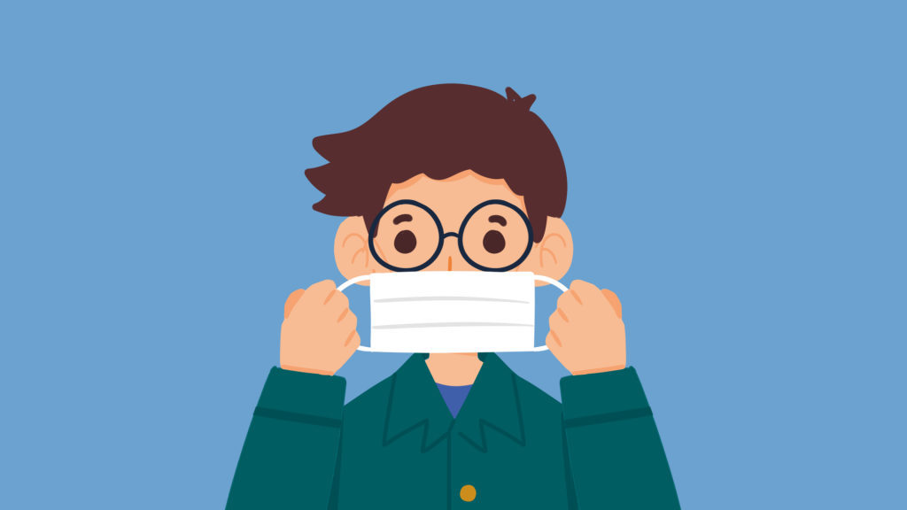
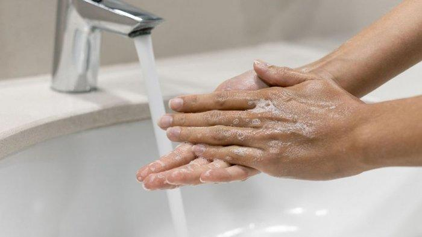
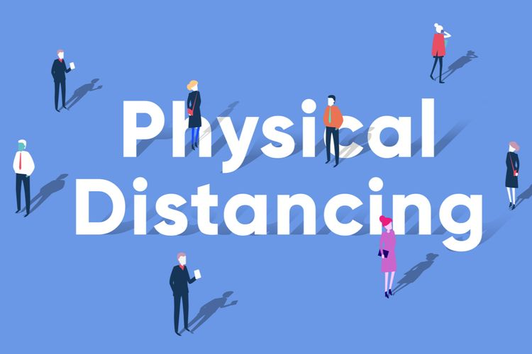
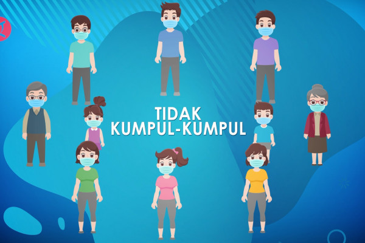

Inilah Cara Pencegahan COVID-19
Sudah setahun lebih sejak kasus pertama dari COVID-19 tercatat di Indonesia. Total kasus dari penyakit yang disebabkan oleh virus corona ini sudah lebih dari satu juta dengan jumlah yang meninggal sebanyak 35 ribu orang. Dengan tingginya angka sebaran yang ada, tentu setiap orang harus berusaha yang terbaik untuk mencegah tidak terjangkit COVID-19. Untuk mengetahui cara yang efektif, baca di sini!
Cara Ampuh untuk Cegah COVID-19
Ada banyak bukti yang menunjukkan jika SARS-CoV-2, atau COVID-19, dapat menular dengan mudah ke banyak orang. Penyakit ini menyebabkan penyakit yang dapat mengancam nyawa saat menyerang beberapa orang. Selain itu, virus corona juga dapat bertahan beberapa saat di udara dan lebih lama lagi, ketika menempel di permukaan suatu benda. Risiko untuk terpapar lebih tinggi saat menyentuh benda tersebut, setelah itu menyentuh mulut, hidung, atau mata.
Diketahui juga jika virus corona berkembang biak lebih cepat di dalam tubuh, meskipun tidak menimbulkan gejala apa pun. Potensi untuk menularkan banyak orang karena merasa diri sehat lebih tinggi dibandingkan seseorang dengan gejala. Maka dari itu, penting untuk mengetahui cara yang paling tepat sebagai pencegahan dari COVID-19. 5M adalah metode gagasan pemerintah untuk menekan kenaikan angka dari COVID-19, antara lain:
1. Menggunakan Masker
Cara pencegahan COVID-19 yang paling efektif untuk dilakukan adalah dengan menggunakan masker. Alat ini harus digunakan terutama saat berada di tempat umum atau berinteraksi dengan orang lain. Penutupan pada mulut dan hidung ampuh untuk menurunkan risiko penyebaran virus corona dengan memblokir tetesan air liur, agar tidak masuk ke tubuh. Sebaran dari udara juga dapat terjadi, sehingga perlu digunakan saat kamu berada di dalam ruangan, terutama yang ber-AC.
2. Mencuci Tangan secara Rutin
Kamu juga dapat mencegah risiko terserang COVID-19 dengan mencuci tangan secara rutin. Cobalah untuk lebih sering mencuci tangan dengan sabun dan air selama 20 detik setelah melakukan beberapa aktivitas, seperti menyentuh suatu benda, memegang bagian depan masker, hingga menyentuh hewan. Kamu juga perlu mencuci tangan sebelum makan dan juga menyentuh wajah. Jika air dan sabun tidak memungkinkan, gunakan hand sanitizer dengan kandungan minimal 60 persen alkohol.
3. Menjaga Jarak
5M lainnya yang harus dilakukan untuk pencegahan COVID-19, yaitu menjaga jarak. Saat berada di luar rumah, pastikan untuk menjauhkan diri sekitar 1–2 meter. Pastikan untuk selalu ingat jika beberapa orang tidak memiliki gejala, meski telah terserang virus corona. Selain itu, hindari juga ruangan tertutup dan lebih banyak aktivitas di ruangan terbuka yang menyediakan udara segar.
4. Menjauhi Kerumunan
Saat berada di keramaian atau kerumunan, risiko untuk tertular COVID-19 menjadi lebih tinggi. Jika ingin melakukan interaksi dengan beberapa orang, pastikan berada di luar ruangan, menggunakan masker, dan tidak lebih dari 5 orang. Intensitas dan jumlah orang sangat berpengaruh terhadap tingkat risiko yang dapat terjadi.
5. Mengurangi Mobilitas
Setiap orang harus benar-benar menanamkan pemahaman jika keperluannya tidak terlalu mendesak, ada baiknya untuk tetap di rumah. Meskipun merasa sehat, belum tentu saat berada di rumah tetap dalam keadaan yang sama atau menyebarkan virusnya pada keluarga di rumah. Tingkatkan perhatian terlebih lagi jika terdapat orang tua atau anak-anak di rumah yang masih rentan terhadap COVID-19.
Selain melakukan 5M, ada beberapa hal lainnya yang perlu dilakukan untuk meningkatkan daya tahan tubuh, salah satunya dengan mengkonsumsi vitamin. Suplemen ini sangat efektif untuk menangkal virus corona saat masuk ke tubuh. Beberapa vitamin yang ampuh untuk mencegah COVID-19 adalah vitamin C dan vitamin D. Usahakan untuk mengkonsumsi dua vitamin tersebut secara rutin setiap harinya.
Hal terakhir yang terbilang masih terbatas untuk didapatkan semua orang adalah vaksin. Metode ini terbilang paling efektif dari semua hal yang ada untuk pencegahan COVID-19 dan dapat menghentikan pandemi ini. Hingga waktunya mendapatkan suntikan vaksin, cobalah untuk terus menerapkan 5M dan konsumsi vitamin serta suplemen dengan rutin.
Gambar Terkait Pencegahan
COVID-19

Menggunakan Masker

Mencuci Tangan Secara Rutin

Menjaga Jarak

Menjauhi Kerumunan
Mengurangi Mobilitas